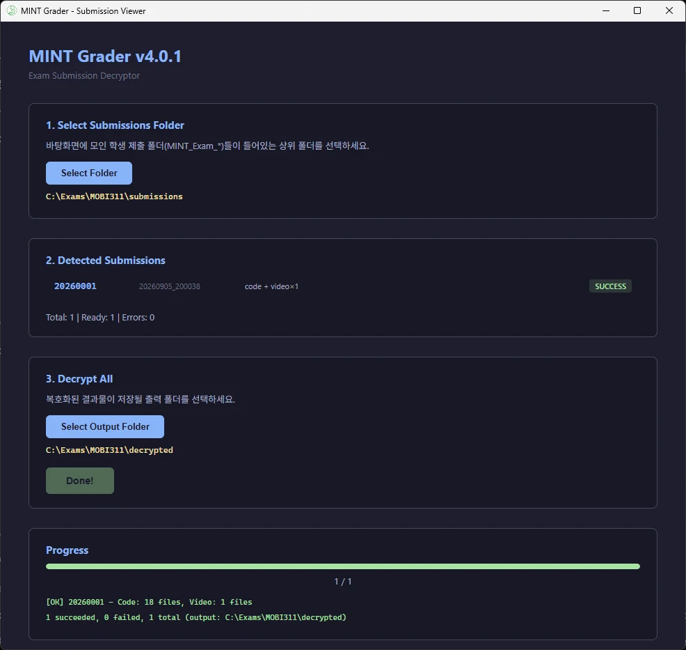
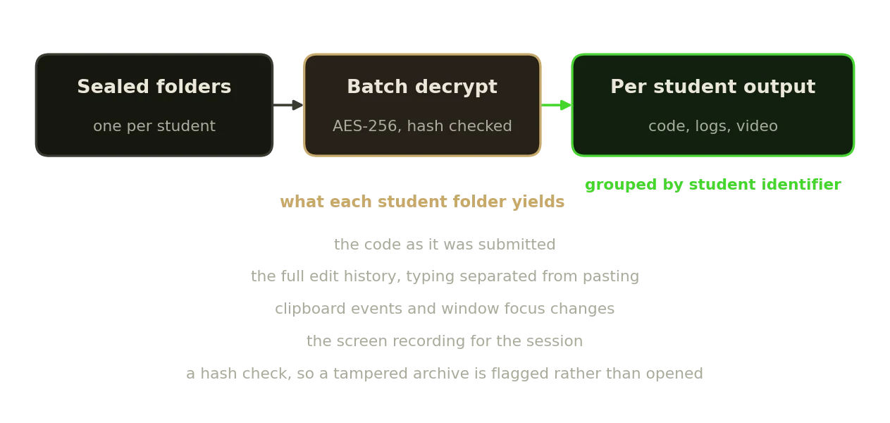
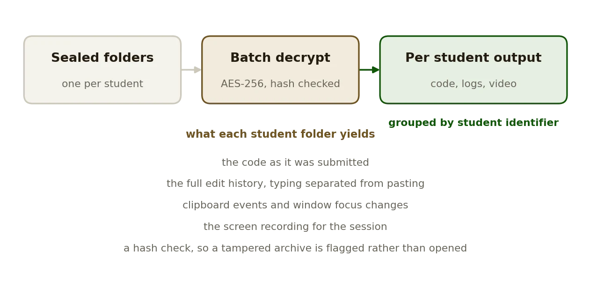

Development · 2026
MINT Grader
The invigilator's half of the pair: one pass over the batch, hash checks before anything opens.
SWAppRust · TS

What it does
- Point it at a folder of MINT_Exam_* submissions; student identifiers are read from the manifests rather than typed in.
- Hash verification before anything is opened, so an archive that was altered after submission is reported instead of silently decrypted.
- One pass over the batch: AES-256, all submissions at once, not one at a time.
- Everything the session recorded, extracted per student: the code, the edit and activity logs, and the screen recording.
Facts
- Year
- 2026
- Status
- Public, release v4.0.1
- Stack
- Tauri: Rust for decryption, hash checks and extraction; TypeScript for the viewer
- Pair
- Opens what MINT Exam IDE seals
Figures

